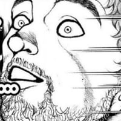

우주 멘헤라 러시아 1. Manhwa
댓글

나 피폐 멘헤라 토실토실 빈곤 흉터 미소녀 좋아하는구나
막짤은ㅋㅋㅋ 돌았나 진짜ㅋㅋㅋ
ㄹㅇ 러시아를 아프리카 차별주의자로 묘사해놨음
하지만 실제로는 중국과 함께 대아프리카 쟁탈전에 깊숙히 들어가 있긴 함ㅎㅎㅎ
중국이 돈을 투자 한다면 러시아는 무기와 군벌을 제공하는 형태였던걸로 기억
가장 확실한 방법이긴 해...
좀 꼴리네요.
하라쇼...하라쇼...
공갈 협박은 러시아의 전통
+씹창난 경제
전세계를 통일하면 안보 불안은 일단 없겠지...
영국은 왜 봐주냐 ㅋㅋ
영국은 브랙시트로 유럽에서 나갔잖아 .... ㅋㅋㅋㅋ
어흐 러시아 귀엽네
살얼음판같이 불안한 정권과 씹창난 경제는 루스끼의 오래된 전통이다

그림 귀여워
저년들 멘헤라지랄에 당대 라이벌국가들 편집증도 같이도지는게 근현대사의 패턴
특히 영국
ㅋㅋㅋㅋㅋㅋㅋㅋ 재밌다
ㄹㅇ 베를린에 깃발 꽂을 때 도파민 지렸을듯
루 끽
루스 이 미친넘들ㅋㅋㅋㅋㅋ
이 문제 솔직히 예전부터 수없이 나오던 이야기인데, 해법은 러시아를 잘게 쪼개고 자치권을 주면 안되는거같음. 특히 모스크바는 접경지로 만들어서 빈 도시로 만들고. 그래야 지구가 평화로워짐
역사적으로 그걸 시도한 인물이 2명 있었는데
나폴레옹과 히틀러라고
이 만화 볼때마다 생각하지만 유럽 현지인 반응 보고싶어 ㅋㅋ
이작가 은근히 여케 ㅈㄴ꼴리게 잘그림
근데 작정하고 꼴리게 그리게하면 노꼴갑임
도와줬다는 내용하고 발칸 내용은 오스트리아에 대한 내용인데,
헝가리 혁명일어났을때 러시아가 50만 대군 보내줘서 오스트리아 도와줌. 그 덕분에 사이좋아지나 했더만 러시아가 프랑스랑 영국 경고했음에도 불구하고 오스만에 들이받는 크림전쟁일으키면서 나가리 됨. 근데 웃긴건 지들이 먼저 박아놓고 오스트리아한테 안도와줬다고 ㅈㄹㅈㄹ함
다 좋은데 러시아에는 적발이 많이 없음... 이젭스크~글라조프 쪽 가면 좀 보이고 대개는 상트에 가까워질수록 금발비율 올라가고 아래로 내려가면 갈색머리 많아짐
그치만 귀엽죠?
하지만 많은 사람들에게 러시아는 여전히 빨갛게 보임
저건 걍 작가가 만화 그릴때 자주쓰는 캐릭터임
지금은 경제랑 전쟁때문애 그나마 친한 나라가 우리나라인가?
도시락과 초코파이 주면 앙 하고 좋아함
호이할때 폴란드로 소련애들넘어오는거 막다가 독일이 통수쳐서 머리 개뜨거워짐
저 평원어쩌구 하는건, 동쪽방향만이 아니라 서쪽도 마찬가지라서
eu연합과 직접 국경맞닿으면 혹시나 만약의 if상황에 하루만에 수도까지 닿을수있는점 때문에
eu연합과 러시아 사이 국가들의 신규eu가입에 굉장히 예민한걸루 알고있음
러뽕은 사람이 아니다
히틀러한테 배운게 있어서 영국은 안 치는구만...
막짤 존나 폭력적이네ㅋㅋㅋ
붉은 물결의 유라시아대륙ㅋㅋㅋㅋㅋㅋ
금요정인가? 당직때 신세 많이 졌는데
대꼴
그래서 2편은 어디
아니 러시아가 귀엽다니
